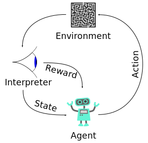

What is Machine Learning?
Machine learning (ML) is a subfield of artificial intelligence (AI) that focuses on algorithms that learn from and make predictions on data. By analyzing patterns and making inferences, machine learning algorithms can improve their performance over time without being explicitly programmed for specific tasks.
The concept of machine learning dates back to the mid-20th century, but it gained significant traction in the 2000s due to the increased availability of data, computational power, and more sophisticated algorithms. Today, ML is integral to many technological applications, from self-driving cars and facial recognition to recommendation systems and automated medical diagnostics.

Core Concepts in Machine Learning
Supervised Learning
In supervised learning, the algorithm is trained on a labeled dataset. Each input data point is associated with a corresponding output (label). The goal of supervised learning is to learn a mapping from inputs to outputs that can be generalized to new, unseen data.
Examples: Image classification, spam detection, sentiment analysis.
Common algorithms used in supervised learning include decision trees, support vector machines (SVMs), and deep learning networks like convolutional neural networks (CNNs).
Unsupervised Learning
Unsupervised learning algorithms are given input data without explicit labels. The goal is to identify underlying structures or patterns in the data, such as grouping similar data points together (clustering) or reducing the dimensionality of the data.
Examples: Customer segmentation, anomaly detection, feature extraction.
Algorithms in unsupervised learning include k-means clustering, principal component analysis (PCA), and hierarchical clustering.

Reinforcement Learning
Reinforcement learning (RL) is a type of machine learning where an agent interacts with an environment and learns to maximize cumulative reward. Unlike supervised or unsupervised learning, reinforcement learning is based on trial and error, with the agent learning from the consequences of its actions.
Examples: Game playing (e.g., AlphaGo), robotics, autonomous driving, optimization problems.
Algorithms used in RL include Q-learning, policy gradient methods, and deep reinforcement learning (DRL).
Deep Learning
Deep learning, a subset of machine learning, involves neural networks with many layers (hence "deep"). These algorithms are particularly powerful at learning complex patterns in data, such as recognizing faces in images or understanding speech. Deep learning has gained tremendous attention due to its success in fields such as computer vision, natural language processing (NLP), and speech recognition.
Key Models: Convolutional neural networks (CNNs), recurrent neural networks (RNNs), and transformers.

Applications of Machine Learning
Machine learning is transforming various industries by automating tasks, enabling new technologies, and providing insights that were once out of reach. Here are some of the key applications of machine learning:
- Healthcare: Machine learning is used to analyze medical images, predict patient outcomes, and assist in drug discovery. Algorithms can detect early signs of diseases like cancer, leading to faster diagnoses.
- Finance: In finance, machine learning models are used for credit scoring, fraud detection, algorithmic trading, and portfolio optimization. ML models can analyze vast amounts of financial data to identify trends and make predictions.
- Retail: E-commerce companies use ML to provide personalized recommendations, optimize pricing strategies, and improve inventory management. It is also used in predictive analytics to forecast sales and customer behavior.
- Transportation: Autonomous vehicles rely heavily on machine learning to understand the surrounding environment and make driving decisions. ML is also used in logistics and route optimization.
- Natural Language Processing: Machine learning is essential in NLP tasks such as sentiment analysis, speech recognition, language translation, and chatbot development.
- Entertainment: Streaming platforms like Netflix and Spotify use machine learning to recommend movies, shows, and music based on user preferences.
Recent Advances in Machine Learning
Machine learning has seen significant advancements in recent years, driven by innovations in algorithms, the availability of big data, and the growth of computing power. Some of the most notable recent developments include:
- Transformers and Attention Mechanisms: Transformers have revolutionized natural language processing and machine learning in general. The self-attention mechanism has enabled the creation of large-scale models like OpenAI's GPT and Google's BERT.
- Generative Models: Generative adversarial networks (GANs) have emerged as a powerful tool for generating realistic images, audio, and even text. GANs consist of two neural networks—one that generates data and one that evaluates it—competing against each other to improve performance.
- Transfer Learning: Transfer learning allows models trained on one task to be reused for different, but related, tasks. This technique has reduced the need for vast amounts of labeled data and significantly improved model efficiency.
- Reinforcement Learning in Robotics: RL algorithms are being used in robotics to teach machines complex tasks, such as manipulating objects, walking, or even learning to perform household chores autonomously.
- AutoML: AutoML refers to the automation of the end-to-end process of applying machine learning to real-world problems. This includes automating data preprocessing, feature engineering, and model selection, allowing non-experts to build high-performing models.
The Future of Machine Learning
Machine learning is one of the most exciting and fast-moving fields in technology today. As data continues to grow exponentially, and computational power advances, the possibilities for ML applications are endless. Some of the emerging trends and areas of interest for the future include:
- Ethical AI: As ML becomes more integrated into society, there is a growing focus on ensuring that machine learning systems are transparent, fair, and free from bias. Research in AI ethics aims to create systems that are not only effective but also socially responsible.
- Explainability: There is a push toward making machine learning models more interpretable. As ML systems are deployed in critical areas like healthcare and finance, understanding how models make decisions is crucial for trust and accountability.
- Quantum Machine Learning: Quantum computing has the potential to revolutionize machine learning by providing exponential speedups in processing and optimization tasks. Although quantum ML is still in its early stages, it holds great promise for future advancements.
- AI for Good: Machine learning is increasingly being used for social good, such as disaster response, poverty alleviation, and environmental conservation. ML models can analyze data to predict natural disasters, optimize resource distribution, and address global challenges.